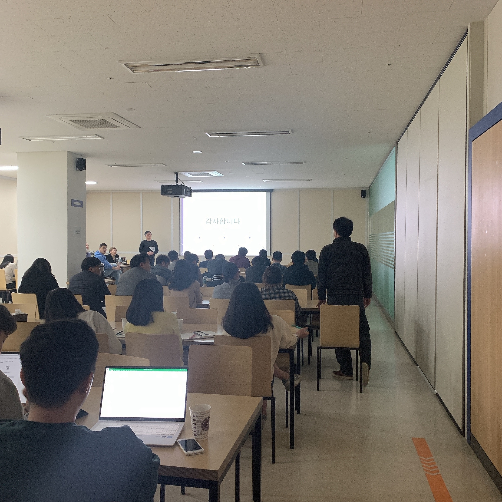
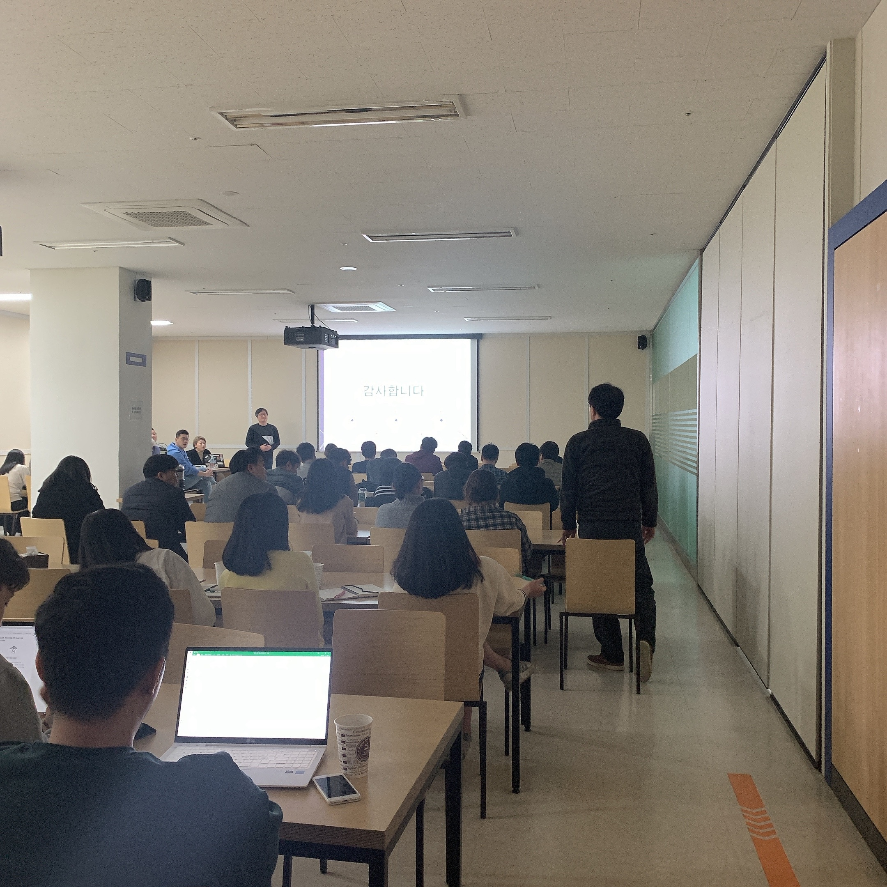
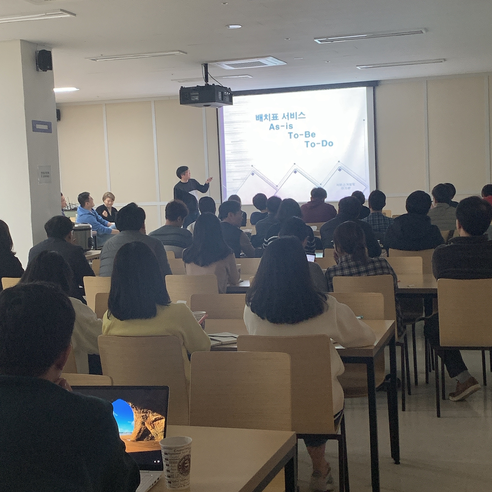

이투스교육 첫번째 기술 세미나인 ‘ETOOS Tech Talk‘을 진행하였습니다. Tech Talk은 분기별 1회 진행하는데 이번 세미나는 1월 29일 이투스교육 서초사옥 B1층에서 열렸습니다.
ETOOS Tech Talk은 이투스교육의 기술브랜드 가치를 높이기 위해 DX혁신부문 Tech Lab에서 업무 및 과제 수행 중 습득한 기술 지식, 경험, 성과 등을 사내외에서 공유하는 세미나입니다. 개발자들이 어떤 업무를 진행하고 있고, 많은 서비스를 관리하면서 어떻게 발전시키고 또한 어떤 문제들을 헤쳐나가야 하는지에 대해 소통할 수 있는 시간입니다.
처음으로 열린 이투스교육 기술세미나 였음에도 불구하고, 다양한 사업부서에서 참석하였습니다. Tech Lab 소속이 아닌 직원들은 전문지식이 없어도 쉽게 이해할 수 있도록 진행하였습니다. 업무 관련 궁금한 사항에 대해 질의응답 시간도 갖고, 앞으로의 방향에 관해서도 이야기하는 뜻 깊은 자리가 되었습니다!
 

이번 발표주제는 세가지 Session을 선정하여 진행하였습니다.
| Session | 주제 | 발표자 |
|---|---|---|
| Session 1 | AWS Re:Invent Las Vegas 참관기 | 남희성 과장 |
| Session 2 | 19년도 배치표 서비스 개편 AS-IS, TO-BE & TO-DO | 이지환 차장 |
| Session 3 | 서비스 성능개선 사례 (DB Tuning) | 김도영 팀장 |
Session 1. AWS Re:Invent Las Vegas 참관기
첫 번째 세션은 남희성 과장님이 Las Vegas에서 진행된 AWS에서 주최하는 세계 최대의 클라우드 컴퓨팅 컨퍼런스인 AWS Re:Invent 행사에 다녀온 후기를 공유하였습니다.
어마어마한 행사 규모, 참석 인원, 발표한 서비스의 수를 보고 놀라움을 감출 수 없었습니다. 행사에 직접 참가하진 않았지만 재치 있는 말솜씨와 함께 사진으로 생생한 후기를 들려주셔서 즐겁게 경청할 수 있었습니다. (아래 링크로 이동하면 사진을 볼 수 있습니다)
개발자로서 기회가 주어진다면 꼭 참가하고 싶다는 마음이 들 정도로 흥미 있는 발표였습니다!👍
발표자료 - AWS re:invent
2. 19년도 배치표 서비스 개편 AS-IS, TO-BE & TO-DO
두 번째 세션은 이지환 차장님이 배치표 이전 서비스의 문제점과 2019년도에 개선된 점, 앞으로의 목표를 공유하였습니다.
배치표는 정시 합격 예측 서비스로, 성적을 입력하면 분석하여 합격 가능성을 진단해주고, 대학을 추천해주는 서비스입니다. 이 서비스의 진행되는 과정과 그 과정에서 발생하는 문제점에 대해 구체적인 설명을 해주셔서 명확하게 파악할 수 있었습니다.
목표를 달성하기 위해 노력하는 개발자의 모습이 무척 멋있습니다!👍

발표 자료 - 20년도 배치표 서비스 개편 AS-IS, TO-BE & TO-DO
3. 서비스 성능개선 사례 (DB Tuning)/선도개발팀 김도영 팀장
세 번째 발표는 김도영 팀장님이 AWS로의 서비스 전환 스토리와 SQL 튜닝 작업을 통해 얻은 장점을 공유하였습니다.
클라우드로 데이터베이스를 이전하여 얻게 된 비용 절감, 업무 변화 등을 그래프와 수치로 정리하여 한눈에 이해할 수 있었습니다. 이런 성능 개선 사례로 SQL 튜닝 작업을 설명하였는데 이를 통해 방대한 양의 데이터를 보다 빠르고 개선된 속도로 출력할 수 있다는 내용이 굉장히 흥미로웠습니다!😄

30분씩 발표를 진행한 후, 간단한 Q&A 시간을 가졌습니다. 질문 하나하나에 정성껏 답변해주셔서 현장에서 바로 궁금증을 해결할 수 있었습니다.
이번 Tech Talk 세가지 세션에는 개발자로서 성장과 기술적인 내용이 담겨있어 얻어갈 내용들이 많았습니다. 발표하신 남희성 과장님, 이지환 차장님, 김도영 팀장님 유용한 정보를 공유해 주셔서 감사합니다.
이벤트
입장할 때 번호표를 나눠드린 후, 추첨을 통해 5분께 선물을 드리는 이벤트를 진행하였습니다. 개발자 행사인 만큼 다음에는 추첨 프로그램을 직접 개발해서 진행하면 좋을 것 같다는 생각을 하였습니다.
이벤트 당첨자분들께서 이번 Tech Talk 행사 후기를 들려주셨습니다.
| 팀 명 | 이름 | 후기 |
|---|---|---|
| 서비스기획1팀 | 정홍민 과장 | 준비하신 발표 내용을 들으면서 Tech Lab에서 서비스의 질을 향상시키기 위해 많은 고민과 노력을 하고 있다는 것을 알 수 있었습니다. |
| 서비스기획2팀 | 나지연 사원 | 개발자가 아닌 사람도 이해하기 쉽게 설명해주신 강사님들 덕분에 유익한 내용들을 배우고 얻어갈 수 있었습니다. |
| 웹개발팀 | 방민주 사원 | 기술 세미나이지만 전문지식이 없어도 이해할 수 있는 내용이라 좋았습니다. 앞으로 이런 세미나가 주기적으로 다양한 주제로 했으면 좋겠습니다. |
| 학원솔루션개발팀 | 정범준 대리 | 앞으로도 계속 이어져 나갔으면 하는 행사이고 언젠가는 저도 행사장에서 기술적으로 발표할 수 있는 개발자가 됐으면 좋겠다고 생각했습니다. |
| 사업전략팀 | 이주호 사원 | 평소 궁금했던 AWS 이관, DB 성능개선 등에 대해 접할 수 있어서 좋았고, 더불어 경품까지 득하게 된 좋은 자리였습니다. |
당첨되신 분들 다시 한 번 축하드립니다!👍

마치며
처음이라 서툰 부분도 많았지만 발표 내용이 유익하고, 이해하기 쉬웠다는 후기들을 들을 수 있었습니다. 이번 Tech Talk을 시작으로 더 알차고, 다양한 주제로 준비하여 앞으로 사내직원들과 함께 공유하며 소통하는 자리를 주기적으로 마련해야 겠다고 생각했습니다.
다음 Tech Talk은 또 다른 주제로 찾아뵙겠습니다.
자리를 빛내주신 참석자 분들과 세션을 발표한 세분께도 유익한 시간이 되었기를 바랍니다.
![img7]